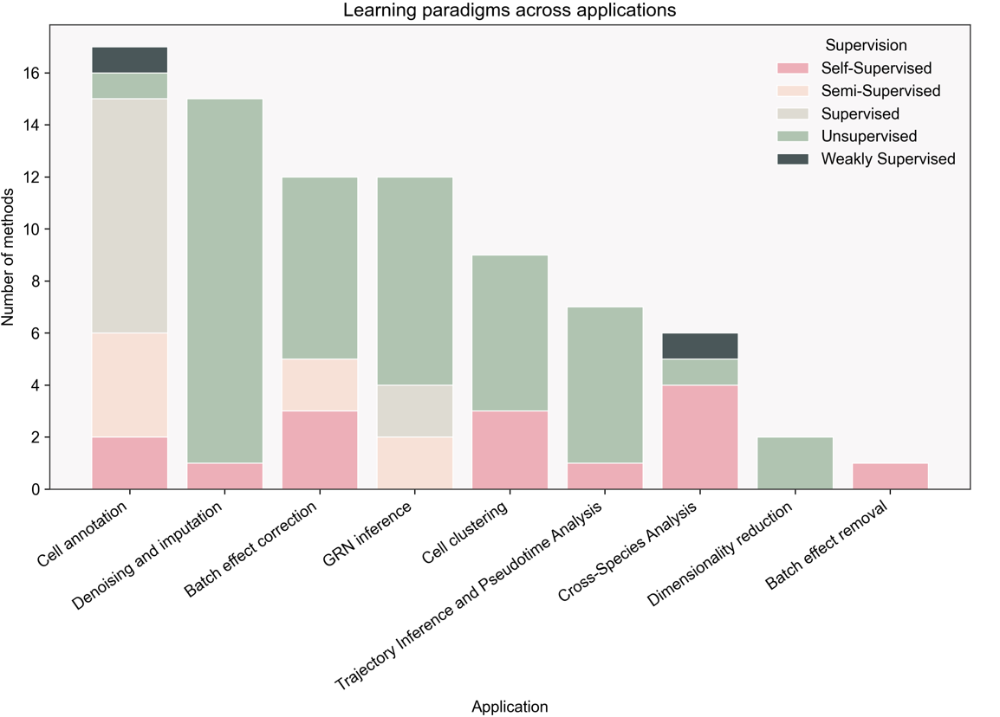
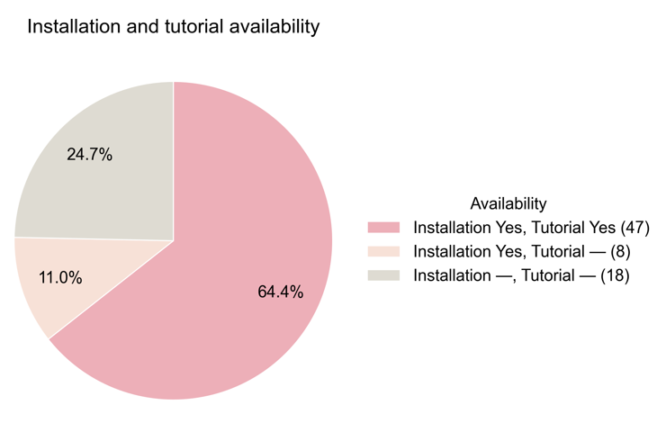

scRNA-seq Task-specific Methods
Our review encompasses 70+ task-specific methods developed specifically for single-cell RNA sequencing analysis. These methods span key analytical workflows including dimensionality reduction, batch effect correction, cell clustering, cell annotation, trajectory inference, and gene regulatory network inference. The following statistics provide an overview of the methodological landscape.
Distribution by Supervision Type

Installation & Tutorial Availability

Key Insights: Approximately 78% of scRNA-seq methods adopt unsupervised or self-supervised paradigms, highlighting a preference for discovering intrinsic cellular patterns instead of relying on extensive labeled references. Reproducibility is improving but not universal—47 of 74 tools (63.5%) ship with both installation instructions and tutorials, so users still need to validate setup details for roughly one-third of the catalog.
Table A: Reproducibility Checklist for scRNA-seq Methods
Column Descriptions: Method - Tool/algorithm name | Application - Primary analytical task(s) | Supervision - Learning paradigm used | Code - GitHub or alternative repository link | Installation - Availability of setup instructions | Tutorials - Availability of user guides
| Method | Application | Supervision | Code | Installation | Tutorials |
|---|---|---|---|---|---|
| scVI | Dimensionality reduction/Batch effect correction/Cross-Species Analysis/Cell clustering | unsupervised | Link | Yes | Yes |
| scGNN | Denoising and imputation | unsupervised | Link | Yes | Yes |
| GeneCompass | Cross-Species Analysis | self-supervised | Link | Yes | Yes |
| scGAE | Dimensionality reduction | unsupervised | Link | Yes | |
| scVGAE | Denoising and imputation | unsupervised | Link | ||
| DeepImpute | Denoising and imputation | unsupervised | Link | Yes | |
| DCA | Denoising and imputation | unsupervised | Link | Yes | Yes |
| AutoClass | Denoising and imputation | self-supervised | Link | Yes | Yes |
| scDHA | Denoising and imputation/Cell clustering | unsupervised | Link | Yes | |
| SERM | Denoising and imputation | unsupervised/self-consistency driven | Link | Yes | |
| scNET | Denoising and imputation | unsupervised | Link | Yes | Yes |
| CNNImpute | Denoising and imputation | unsupervised | |||
| scAMF | Denoising and imputation | unsupervised | Link | ||
| DGAN | Denoising and imputation | unsupervised | Link | ||
| ZILLNB | Denoising and imputation/Batch effect correction/Cell clustering | unsupervised | Link | Yes | Yes |
| UniVI | Denoising and imputation | unsupervised | Link | Yes | |
| SCDD | Denoising and imputation | unsupervised | Link | Yes | |
| scIDPMs | Denoising and imputation | unsupervised | Link | ||
| scMEDAL | Batch effect correction | unsupervised | |||
| ABC | Batch effect correction | semi-supervised | Link | Yes | Yes |
| CarDEC | Batch effect removal/Cell clustering | self-supervised | Link | Yes | Yes |
| DESC | Batch effect correction/Cell clustering | unsupervised | Link | Yes | Yes |
| DeepBID | Batch effect correction | unsupervised | Link | Yes | |
| ResPAN | Batch effect correction | unsupervised | Link | Yes | Yes |
| scDML | Batch effect correction | self-supervised | Link | Yes | Yes |
| BERMAD | Batch effect correction | self-supervised | Link | Yes | Yes |
| Portal | Batch effect correction | unsupervised | Link | Yes | Yes |
| deepMNN | Batch effect correction | self-supervised | Link | ||
| STACAS | Batch effect correction | semi-supervised | Link | Yes | Yes |
| scVAE | Cell clustering | unsupervised | Link | Yes | Yes |
| scDeepCluster | Cell clustering | unsupervised | Link | Yes | Yes |
| Cell BLAST | Cell annotation | unsupervised | Link | Yes | |
| scSemiCluster | Cell annotation | semi-supervised | Link | ||
| scBalance | Cell annotation | supervised | Link | Yes | Yes |
| scTab | Cell annotation | supervised | Link | Yes | Yes |
| scVQC | Cell annotation | supervised | Link | ||
| scNym | Cell annotation | semi-supervised | Link | Yes | Yes |
| CAMLU | Cell annotation | semi-supervised | Link | Yes | Yes |
| TripletCell | Cell annotation | supervised | Link | ||
| scDeepSort | Cell annotation | supervised | Link | Yes | Yes |
| mtANN | Cell annotation | supervised | Link | Yes | Yes |
| scGAD | Cell annotation | semi-supervised & self-supervised | Link | ||
| cellassign | Cell annotation | weakly supervised | Link | Yes | Yes |
| Celler | Cell annotation | supervised | Link | Yes | Yes |
| scMMT | Cell annotation | supervised | Link | Yes | |
| TOSICA | Cell annotation | supervised | Link | Yes | Yes |
| RegFormer | Cell annotation | self-supervised | Link | Yes | Yes |
| GPTCelltype | Cell annotation | self-supervised | Link | Yes | Yes |
| DeepVelo | Trajectory Inference and Pseudotime Analysis | self-supervised | Link | Yes | Yes |
| VeloVI | Trajectory Inference and Pseudotime Analysis | unsupervised | Link | Yes | Yes |
| scTour | Trajectory Inference and Pseudotime Analysis | unsupervised | Link | Yes | Yes |
| VITAE | Trajectory Inference and Pseudotime Analysis | unsupervised | Link | Yes | Yes |
| TrajectoryNet | Trajectory Inference and Pseudotime Analysis | unsupervised | Link | Yes | Yes |
| TIGON | Trajectory Inference and Pseudotime Analysis | unsupervised | Link | Yes | Yes |
| GeneTrajectory | Trajectory Inference and Pseudotime Analysis | unsupervised | Link | Yes | Yes |
| DeepSEM | GRN inference | unsupervised | Link | Yes | Yes |
| CellOracle | GRN inference | unsupervised | Link | Yes | Yes |
| LINGER | GRN inference | unsupervised | Link | Yes | Yes |
| scMultiomeGRN | GRN inference | semi-supervised | Link | ||
| scMTNI | GRN inference | unsupervised | Link | Yes | Yes |
| GRN-VAE | GRN inference | unsupervised | Link | Yes | Yes |
| GRANGER | GRN inference | unsupervised | Link | Yes | Yes |
| scGeneRAI | GRN inference | unsupervised/self-supervised | Link | ||
| scGREAT / InfoSEM | GRN inference | supervised | Link | Yes | |
| scRegNet | GRN inference | supervised | Link | Yes | |
| DigNet / RegDiffusion | GRN inference | unsupervised | Link | Yes | Yes |
| CACIMAR | Cross-Species Analysis | self-supervised / unsupervised | Link | Yes | Yes |
| Nvwa | Cross-Species Analysis | self-supervised / unsupervised | Link | ||
| CAME | Cross-Species Analysis | self-supervised / unsupervised | Link | Yes | Yes |
| SATURN | Cross-Species Analysis | weakly supervised | Link | Yes | Yes |
| scAMAC | Cell clustering | self-supervised | Link | ||
| scSMD | Cell clustering | self-supervised /unsupervised | Link | Yes | Yes |
| GRNFormer | GRN inference | semi-supervised | Link | Yes | Yes |
📊 Analysis Summary
- Total Methods Reviewed: 74
- Primary Applications: Dimensionality Reduction, Batch Effect Correction, Cell Clustering, Cell Annotation, Trajectory Inference, GRN Inference
- Supervision Paradigms: Unsupervised, Self-supervised, Semi-supervised, Supervised, Weakly-supervised
- Code Availability: 71/74 (96%) of methods link to public repositories
- Installation Guidance: 55/74 (74%) provide installation steps, 50/74 (68%) include tutorials, and 47/74 (64%) offer both